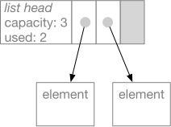
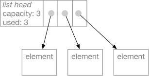
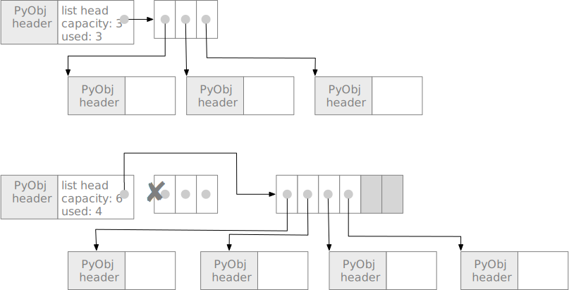
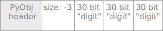
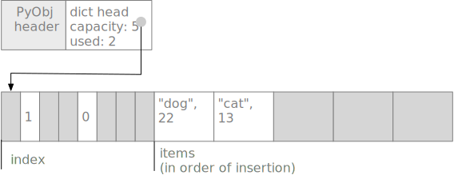
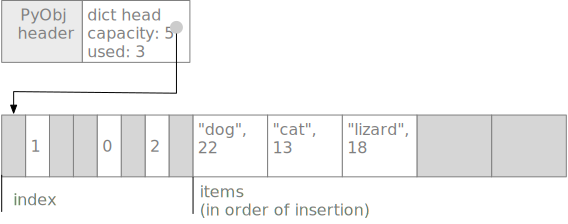

How Python Works#
Or: Seven things they never told you about Python.#
Number 5 will blow your mind.
You write programs in Python to run with the Python interpreter, but the Python interpreter itself is a computer program. Let’s look inside.
Use the source, Luke#
Although there are alternative implementations of Python, when
someone mentioned “the Python interpreter”, they usually mean
CPython. That’s the version of Python that you can download and
install from python.org. CPython 2.x and CPython 3.x are both
versions of CPython.
CPython is an open source project. It is hosted on GitHub,
like our projects, but it is somewhat larger. You can
find it at https://github.com/python/cpython.
Perhaps one day you will contribute a new feature to CPython, or fix a bug.
As a relatively new developer, it is likely a little daunting to
dive into a codebase of this size and complexity, but there is
documentation to help you when you are ready.
An overall guide for developers who want to contribute
to the Python project can be found at
https://devguide.python.org/.
A more general guide for understanding Python’s internals, even if you do not
want to contribute to Python’s development, can be found
at https://devguide.python.org/exploring/.
Philip Guo, creator of the wonderful
PythonTutor,
has recorded lectures of a class he taught on on internals
of CPython 2.7. I have watched only parts. They are very good, as
I would expect, but move a little slowly because they are
recordings of actual class interactions. You can find them at
http://pgbovine.net/cpython-internals.htm.
I expect these guides and the source code itself will be more accessible to you when you are a little farther along in computer science. In the remainder of this document, I’ll try to describe some key aspects of how CPython 3 works, but in less detail and with fewer assumptions about your background.
Translation and Execution#
CPython is an interpreter. That means it reads Python source code and then
executes instructions that “interpret” the program. In CIS 211 you
write an interpreter for a calculator, and in the final project you
write a compiler for a simple language to run on the Duck Machine.
CPython is more complex, but not essentially different.
The CPython interpreter works in two phases. In the first phase, CPython translates Python source code into an intermediate, lower-level representation. The lower level representation is designed to be efficient for execution, and is not readily readable by humans. It is a sequence of instructions for a Python virtual machine, which is a program simulating a special purpose Python computer.
The Python virtual machine, or byte code interpreter, is a simulated computer like our Duck Machine. Unlike our Duck Machine, though, it is not designed to be simulate a real hardware computer. It is instead an imaginary machine specialized for executing Python programs. It doesn’t have registers like the Duck Machine, but it has several data structures for managing Python program execution. One of the key data structures is a stack. Virtual machines like the one in CPython are called stack machines because their stack is used much the way registers are used in a physical computer.
Each of the operations of the Python virtual machine is more complex than individual operations on the Duck Machine. Since the Python virtual machine is a stack machine, the byte code instructures are arranged in postfix order, much like the input of our calculator. For example, this small Python function:
def simple(a: int, b: int) -> int:
x = 11
c = a + b * x
return c
is translated into the following byte code instructions:
LOAD_CONST 1 # Push constant 11, which is at location 1
STORE_FAST 2 # Pop and store in x, at location 2
LOAD_FAST 0 # Push first argument a, found at address 0
LOAD_FAST 1 # Push second argument b, found at address 1
LOAD_FAST 2 # Push value of x
BINARY_MULTIPLY # Pops values of x and b, pushes x*b
BINARY_ADD # Pops values x*b and a, pushes a + x*b
STORE_FAST 3 # Pop sum and store in variable c
LOAD_FAST 3 # Push value of c, found at address 3
RETURN_VALUE # Pop value and return it
This is not very clever code! Note how it pops a value to store
in variable c, then immediately pushes that value back on the
stack before returning it. When you write a code generator,
do not despair over the quality of code you produce. Code generators
written by experts are pretty bad too. (Language translators often
have an optional optimization phase that improves the generated
code somewhat.)
What does the BINARY_ADD byte code instruction do? You already
know: It calls the __add__ method on its operand. This is a
very complex operation compared to the simple operations performed
by each instruction in a physical CPU.
Python translation compared to Java, C, etc#
Many language implementations use a two-step process
much like Python. If you have programmed in Java,
the first part (translation to byte code) was what the
javac program did, and the second part (executing
the byte code) was what the java program did. The
Java virtual machine differs from the Python virtual
machine in several regards, but it too is a stack machine.
Some language implementations take a different approach, translating the source language (like C or C++) to the actual machine code of a physical machine. This is called “compiling” or “compiling to native code”. The CPython interpreter itself is a C program that has been compiled to native code, which might be the machine code for an Intel x86 processor or the machine code for an ARM CPU (for example, if you run Python on a Raspberry Pi).
In principle the same language can be translated in different manners. There is nothing to prevent building an interpreter for C (and it has been done), and it is possible in principle to build a native code compiler for Python (but it’s not easy). In practice, some language designs lend themselves to native code compilation, and some make it more difficult. Python was designed to be an interpreted language.
Further reading: There is a very nice, basic description of the Python virtual stack machine at https://www.ics.uci.edu/~brgallar/week9_3.html.
Key Data Types in CPython#
The built-in object types in Python include integers, strings, lists, and dicts. There is a built-in class for each of these. The built-in classes are almost like classes you define in Python, but they are actually written in C.
All Python objects, from integers to classes to strings, are
represented by PyObject structures (struct) in the CPython
code. All PyObject structures have a header part, which contains
a reference to its type (which in Python is a class object)
and a reference count, used by the garbage collector.
Information specific to each built-in type in Python follows the
PyObject header.
Class list#
A Python list is represented by a structure sometimes called a
flexible array. After the headers, elements of the list (which are
always references to other objects) are stored in an array. We call
it a flexible array because the list has a capacity that may be
greater than the number of elements currently in the list. For
example, if we had a list with two elements

the append method would use the next available space in the array
and update information in the list headers part of the structure.

This makes the append and pop methods very efficient if you always
append and pop at the end of the list. If the capacity of the list
is exhausted, appending a new element requires allocating a larger
flexible array.

The details are a little more complicated. First, a list object,
like all Python objects, starts with a header that identifies the
type of the object and holds some bookkeeping information for the
garbage collector (the component that recycles unused objects).
Second, Python can’t just put the flexible part of the object adjacent
to the header in memory, because there might not be available space to
expand it when its capacity is exhausted. So, instead, the header
contains a pointer to the variable part. When we expand the capacity
of the flexible array, we discard the old area (allowing the garbage
collector to recycle it) and allocate a new one.

Python never moves object headers. This is so that an object reference in Python can be represented simply as a memory address. If object headers moved around, references would either need a more complex representation, or else all references to an object would need to be modified when the object header moved. In consequence, all the mutable container classes of Python (lists, dicts, sets, strings) have a fixed header with a pointer to the part that can grow.
Class int#
Although memory hardware is not really “typed”, CPUs have
operations like ADD that treat values as integers.
Most programming languages have an integer type that
is essentially just a 32-bit or 64-bit integer exactly
as supported by the hardware. Python’s int class is
different. A Python int is actually an object wrapper for
a variable length list of integers. Python uses this
representation so that it can deal with very large numbers,
even larger than 64 bits which is typically the upper
limit for integers in languages like Java and C.
When you add two large integers, Python may actually execute
a loop to add up corresponding parts!
Because the int class really is a class, it has methods
like any other class. When we add int objects, we call the
__add__ method just like we would if we were adding strings
(whose __add__ method concatenates strings). The __add__
method for int, and all the other arithmetic methods for int,
are implemented in C.
While some int objects may have more digits than others, and
therefore occupy more a larger area of memory, int objects never
have to grow because they are immutable. When you add 329 and 41,
you do not change 329 or change 41, but rather create a new int
object to hold the value 370. Because they are immutable, an int
object need not be split into a fixed part and a variable part
like a list object.
While the standard integer representation in all modern
computers I am aware of uses 2s complement representation
for negative numbers, Python uses sign and magnitude
representation. The magnitude is represented by a sequence
of 30-bit “digits”. The number of digits is stored in the
header of the int object. Since the number of digits can
never be negative, a digit count of \(-k\) is used to indicate
that there are \(k\) digits and the value is negative. For
example, a very large negative integer might have a size field
of \(-3\), indicating that it requires three 30-bit digits (each
of which is represented as a non-negative integer) and that the value
is negative.

The sign and magnitude representation and variable length
complicate every arithmetic operation,
but the interpreter uses some clever tricks to make arithmetic
on small numbers reasonably efficient. There are special cases in the
interpreter code for integers small enough to fit entirely in a 32-bit
machine word. Python also keeps a stash of common small values that
it reuses so that it doesn’t have to create as many new int objects.
Nevertheless arithmetic in Python is much, much slower than arithmetic
in a language like C or Java.
You might be aware that a lot of scientific computing is done in
Python,
and you might wonder how that can be feasible given the very
inefficient (but flexible!) representation of int. The answer is
that high performance scientific programs do not depend too
heavily on the built-in Python int type (nor even on float).
Scientific computing relies heavily on the scipy and numpy libraries,
which provide their own implementation of arrays and matrices of
numbers. The numbers in those arrays and matrices are not Python
int or float numbers, but rather a more basic, less flexible
representation, exactly as you would find in C or C++ code (and in
fact implemented in C).
Class dict#
A dict is implemented as a hash table. Like a list, it is a
container class that might need to be expanded as items are added,
so it is broken into a head part with a fixed address and a
content part of “payload” that can be reallocated with a larger
capacity.
Hash tables (called “hashmaps” in Java) are a form of “scatter
storage”. Let’s consider the dict { "dog": 22, "cat": 13 },
and assume the dict structure initially has room for 5 (key, value)
pairs.

The items part of the structure
holds the (key, value) pairs (which are
actually references to other objects).
Each new entry is just appended, as in the
list structure. Indexes of their positions are
scattered in the index part of the structure.
The scattering is determined by a hash function.
A hash function (or just hash) of a key is a
function that maps the key deterministically to a
value that is somewhat random (but always the same
for a given key). For example, hash("dog") might return 28.
There are only 8 slots in the index, so we take
28 mod 8 to compute the index 4. Slot 4
of the index part contains 0,
indicating that the entry for “dog” is in slot 0
of the items part of the structure.
Suppose we give the command d["lizard"] = 18 to add
(“lizard”, 18) to the hash table. Maybe hash("lizard")
returns 36. 36 mod 8 is 4, the same as 28 mod 8, and
slot 4 of the index already contains a reference to the entry
for (“dog”, 22). This is called a hash collision or
just collision, because the hash indexes for
“dog” and “lizard” have collided at slot 4.
What should we do?
Python uses a collision resolution approach called open addressing. You might also summarize it as “if once you don’t succeed, try, try again”. Slot 4 is taken, so Python adds something to the index, again reduces it modulo the number of elements in the index portion of the structure, and tries again. Let’s say it adds 5, so it next tries slot (5 + 4) mod 8, which is 1. But slot 1 is also in use! So it adds a larger number, maybe 197. (197 + 1) mod 8 is 6, so it tries slot 6. That slot is empty, so it stores 2 in that slot to indicate that slot 2 in the items part is where (“lizard”, 18) can be found.

If we write x = d["lizard"], the same set of probes occurs:
We hash “lizard” and get 36 % 8, and looking in slot 4 of
the indexes we find 0. We check slot 0 of the items part, but
instead of “lizard” we find “dog”. Next we add 5, which leads
us to check entry 1, but we find “cat” instead of “lizard”. Finally
we try slot 6 of the indexes, which leads us to slot 2 of the items,
where we find (“lizard”, 18). If we instead landed on an empty
slot in the indexes, we would conclude that there was no key “lizard”
and raise a key error.
Note that in our example, the capacity of the hash table is 5 items, but there are 8 slots in the index part of the structure. We want to minimize the number of collisions, and we want the probe sequences (like the sequence 4, 1, 6 for “lizard”) as short as possible, but without wasting too much space. At present Python 3 allocates about 1.5 times as many index slots as elements. It uses a quadratic probe sequence that ensures that, if there is at least one empty index slot, it will always be found eventually. The variable size portion of the dict structure is reallocated whenever the items part is exhausted, so there will always be available index slots.
References#
In addition to Python official documentation, I have relied partially on some of these:
Brayan Rafael Gallardo, summary of class notes from UC Irvine ICS 33 (based on lectures and notes by Richard Pattis), 2016. https://www.ics.uci.edu/~brgallar/index.html
Artem Golubin, “Python internals: Arbitrary-precision integer implementation”, 2017. https://rushter.com/blog/python-integer-implementation/
Python Software Consortium. CPython version 3 source code repository